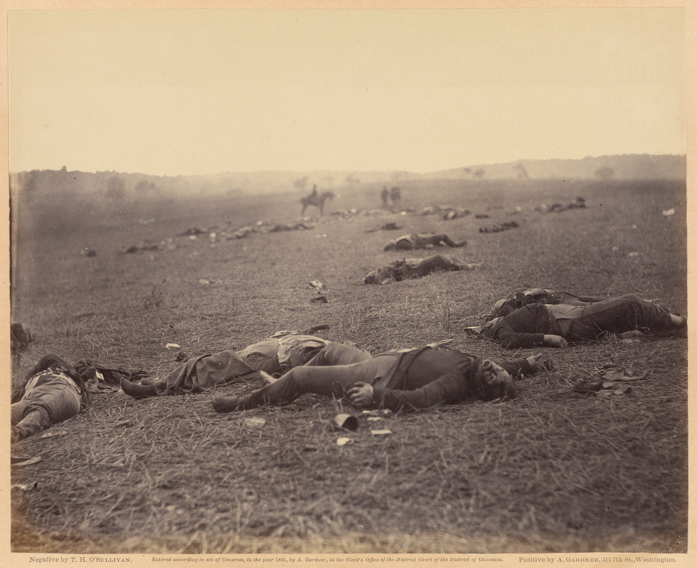
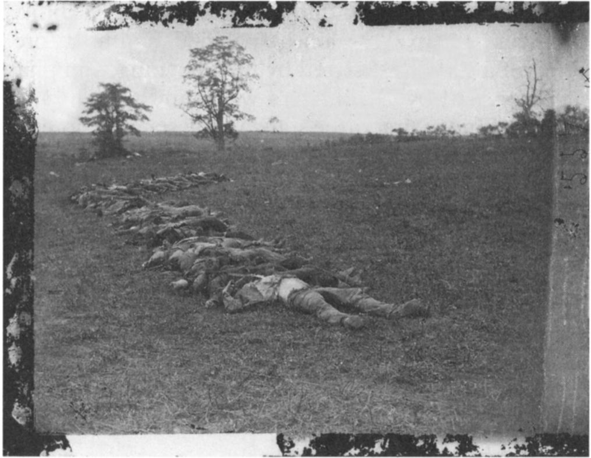
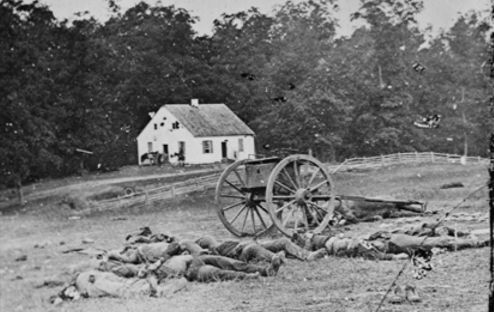

While Frederick Douglass made use of the photograph for its objective power of truth telling, he also acknowledged its death-like nature in Pictures and Progress: "Byron says, a man always looks dead, when his Biography is written. The same is even more true when his picture is taken. There is ever something statue like about such men." The famous 19th century poet Emily Dickinson held an even more extreme opinion of photography: Dickinson's poetry is heavily focused around the theme of death, and her poems were influenced by the civil war. The invention of photography made it possible for civilians to watch the bloody four year long civil war as it progressed. Therefore, it doesn't come as a surprise to see such an influence.
In her article Death's Surprise, Stamped Visible Eliza Richards analyzes Dickinson's poetry in the context of Civil War photography. Richards demonstrates how Dickinson insists "photography deadens not only the subject, but also the viewer" (Richards 15). For Dickinson, photographs represent a presence that is no longer with us. Even if the subject is still alive today, an image has no means of communicating with the viewer, and thus can be seen as simply a memory bundled with the past. Thus, photography could be seen as a twofold truth: while being purely objective, showing no falsehood of a subject and lacking no detail, photographs also flatten life into a still, lifeless image. The photograph becomes a "mirror with a memory" that "freezes the viewer rather than enlivening the subject" (Richards 25).

This perspective of photography grew largely due to the influence of the Civil War and the large amount of casualties suffered throughout, as photography was used to capture these morbid scenes. Though Richards does not have direct evidence of Dickinson seeing the following images, all of the poems she discusses were written in the middle of 1862, in the midst of the war. One such example of the influence of photography's role as a medium for death was at the battle of Antietam. The battle, taking place in a cornfield near Antietam Creek was said to be "the most picturesque battle of the war" by a sketch artist for Frank Leslies' Illustrated and was packed with spectators (Richards 21). The beauty of the surroundingss proved a sort of irony, as Antietam quickly became renowned as the bloodiest day in the Civil War (and American History).
In some of the most powerful displays of death in the Civil War, photographer Alexander Gardner captured many images of the dead at Antietam:

Both the war and the photographic coverage reached an "epochal moment," in Zeller's words, in September 1862, at the Battle of Antietam in Maryland. Alexander Gardner recorded 45 stereoscopic glass negativesthe first photographic images of dead American soldiers on the battle eld. In mid- October, the images from those negatives went on display in Brady's New York gallery, where an unnamed New York Times reporter wrote of the 'terrible distinctness' of these images (Daukantas 29).
These photographs of death and battle scenes seem oddly calm and still to the modern eye. This is mostly as a result of the bulky and fragile equipment used for photography during the war; the unwieldy cameras and long exposure made it impossible to capture any battle action, so photographers instead took photographs of the morbid aftermath of these battles. It was also common practice to move the bodies after a battle, using the dead as props to convey the photographer's macabre images ("Guest Editors' Introduction: Photography at War," 1).